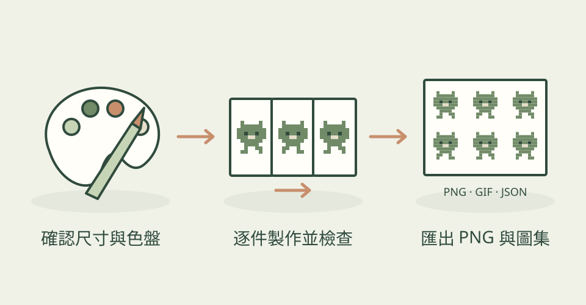

做出一棵好看的像素樹不難，難的是後面的草地、道具與角色還像同一款遊戲。Pixel Asset Master 把工作拆成需求、美術方向確認、固定規格、逐件製作、檢查與匯出，幫 AI 助手記住每張圖的尺寸、色盤和動作格數。它是製作流程與輔助腳本，不是保證一鍵完成整套遊戲的模型。
它怎麼幫忙
先把需求分成角色、地形、物品、介面、特效與背景，確認尺寸、平台、色盤、畫風、方向及動作。把決定寫入 design_spec.md 與 spec_lock.md；每件素材製作前重讀規格。再用腳本檢查格式與顏色、減色與整理邊緣，最後打包圖集。地形另要求以 2×2 拼接檢查接縫，避免規律噪點與明顯網格。
三步驟看懂這個技能

固定美術規格後逐件檢查，再整理遊戲素材；本站功能示意，非作者成果或執行結果。
功能示意・本站繪製 放大查看可以這樣開口
這是一個可依需求修改的委託範例。
替水墨風小遊戲做一組同色系素材：先確認樹木與地形的尺寸和限色色盤，製作櫻花樹、柳樹與竹子，再補草地和泥地。樹木的搖擺各自訂格數，地形以重複拼接檢查；交付各張 PNG、動畫格與圖集資料。這是本站需求範例，非執行成果。
適合什麼工作
適合獨立遊戲開發者、需要整理大量素材的像素美術工作者，以及願意分階段看圖確認的 AI 創作者。已有參考圖時，可用它整理色盤與共同規格。
開始之前
- 準備工具
- 作者列 Python 3.8+ 與 Pillow，另需可讀檔、寫程式和看圖的 AI 助手；要保留完整儲存庫中的模板與腳本。生圖服務依使用者選擇接入，並非所有流程都強制使用 API。
- 使用成本
- 儲存庫標示 MIT，沒有固定必買的像素編輯器；AI 助手額度和選用圖片供應商可能收費。純本機檢查與圖集整理不需付費生成 API。
- 交付內容
- 個別 PNG、動畫影格、精靈圖集、色盤檔與含尺寸／動畫資訊的 JSON 清單；實際引擎匯入與畫面品質仍需人工確認。
- 先留意
- 2026-11-16 首次收錄，非今天發布；專案建立於 2026-05-02，本次觀察 118 星，屬小型候選而非熱門榜冠軍。README 與實際 SKILL 已核對，未執行候選。技能仍含作者電腦的 E 槽地形參考路徑，使用時需改成自己的檔案，不能假定範例存在。自動檢查不能取代角色一致性、動畫節奏及拼接的目視審核。
作者與來源
本文依作者公開說明整理，沒有實際執行這個專案。功能插圖由本站繪製，原作者範例另行標示；並非本站執行技能的測試結果。GitHub 星數為專案總量，觀察時間為 2026年11月17日 08:34（台北時間）。
與前次快照相比增加 0 星；這不是 GitHub Trending 排名。